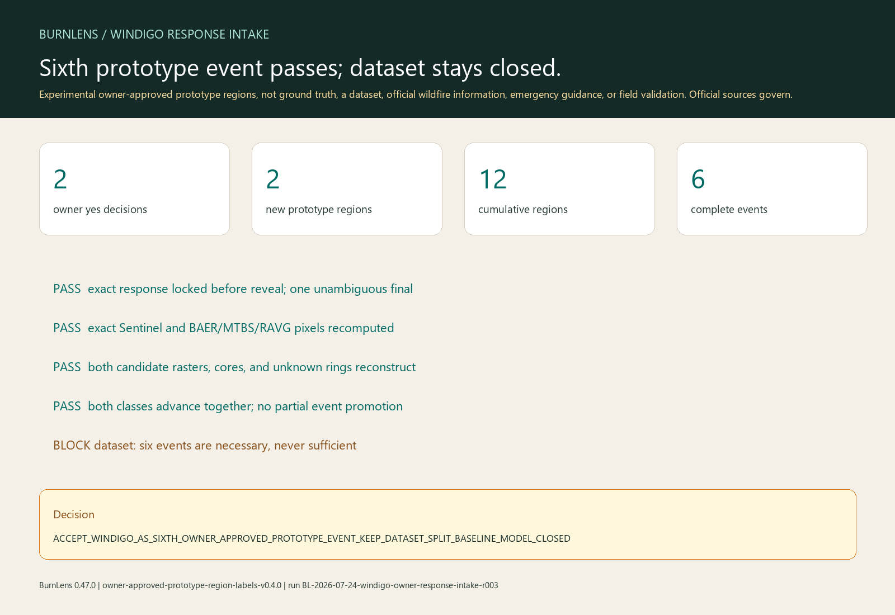

Experimental owner-approved prototype regions, not ground truth, a dataset, official wildfire information, emergency guidance, or field validation. Official sources govern.
Aggregate result
Owner decisions: 2 yes / 0 no / 0 uncertain. Windigo adds one burned and one background prototype region only because every non-owner gate also passes.
Exact source pixels, proposal routes, candidate rasters, native grid, uncertainty rings, terms, and event identity all reconstruct. Notes and unit decisions remain private.

Sources and roles
- Contains modified Copernicus Sentinel data 2022, accessed through CDSE.
- BAER evidence is field-informed preliminary prototype-positive evidence with program cautions.
- MTBS evidence corroborates the burned proposal under program-specific limits.
- RAVG modeled effects remain context and conservative exclusion only.
Why the dataset remains blocked
Six complete event groups meet only the frozen count minimum. The separate sufficiency evaluator has not passed class and uncertainty completeness, source-regime replication, never-tuned transfer, dominance, and leakage gates. No dataset or split exists.
Decision
ACCEPT_WINDIGO_AS_SIXTH_OWNER_APPROVED_PROTOTYPE_EVENT_KEEP_DATASET_SPLIT_BASELINE_MODEL_CLOSED
BurnLens 0.47.0 · label set owner-approved-prototype-region-labels-v0.4.0 · schema burn-scar-five-state-schema-v0.1.0 · run BL-2026-07-24-windigo-owner-response-intake-r003 · source 68fd2171e52844f717ef0d6a1b108121cd93bee1. Dataset, split, baseline, and model remain absent.